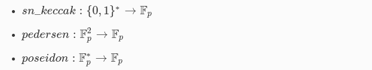

Starknet y Funciones Hash
Hemos visto la importancia de las firmas, el poder de AA y la asociación de los hash dentro del ecosistema de Starknet y StarkEx. Ahora, profundicemos en cómo se utilizan y los diferentes tipos de hash que podemos encontrar.
Dominio y rango
Todas las salidas de las funciones de hash se mapean eventualmente a elementos en ùîΩ‚Çö con p = 2¬≤‚ŵ¬π + 17 ‚ãÖ 2¬π‚Åπ¬≤ + 1 como vimos en la Stark Curve.
Las funciones hash son componentes clave en las especificaciones de Starknet, y se utilizan para mapear las salidas de los c√°lculos a elementos en el campo finito ùîΩ‚Çö. A continuaci√≥n, explicaremos las tres funciones hash utilizadas en Starknet de manera m√°s clara:

- sn_keccak: Esta función hash se basa en el algoritmo KECCAK, que es una familia de funciones hash criptográficas como vimos antes. Su dominio es el conjunto de cadenas de bits compuestas por ceros y unos
{0,1}*y su rango es el campo finitoùîΩ‚ÇöLa funci√≥n toma una cadena de bits como entrada y produce una salida en el campo finitoùîΩ‚Çö. - Pedersen: La funci√≥n hash Pedersen es una funci√≥n hash computacionalmente segura que se utiliza en la construcci√≥n de criptograf√≠a de compromiso cero y otras primitivas criptogr√°ficas. Su dominio es el conjunto de pares de elementos del campo finito
ùîΩ¬≤p, dondepes un n√∫mero primo, y su rango es el campo finitoùîΩp. La funci√≥n toma un par de elementos del campo finitoùîΩ¬≤pcomo entrada y produce una salida en el campo finitoùîΩp. - Poseidon: La funci√≥n hash Poseidon es una funci√≥n hash criptogr√°fica dise√±ada para resistir ataques criptogr√°ficos, como los ataques de preimagen y colisi√≥n. Su dominio es un conjunto de elementos del campo finito
ùîΩp, que incluye el cero y los elementos inversos multiplicativos, y su rango tambi√©n es el campo finitoùîΩp. La funci√≥n toma un conjunto de elementos del campo finitoùîΩpcomo entrada y produce una salida en el campo finitoùîΩp.
Las funciones de hash mencionadas son añadidas como Builtin (AIR integradas específicas de aplicaciones), que se utilizan como herramientas adicionales en el protocolo para garantizar la seguridad y la integridad de las transacciones y los datos.
Estas funciones hash desempeñan un papel fundamental en las operaciones de Starknet al garantizar la integridad y seguridad de los cálculos realizados en el sistema.